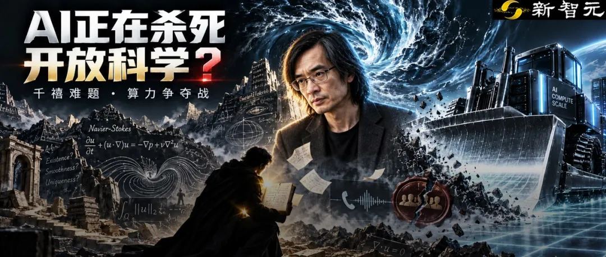

新智元报道
新智元报道

今天，全网都在吃OpenAI的这个大瓜。
昨晚，OpenAI正式官宣：千禧年难题之一的纳维-斯托克斯方程，已被内部模型正式破解。
然而这背后，事情可绝不是这么简单。
有人曝出一种说法：纽约大学数学家苦心孤诣寻找灵感，刚刚摸索出一条解决「千禧年大奖难题」的路径。
结果，巨头OpenAI闻风而动，直接调集海量算力「暴力截胡」，不仅企图抢发论文，还仗势欺人，逼迫团队删除竞争对手公司员工的署名。
这种说法究竟是否属实，还没人能说清。
但菲尔兹奖得主陶哲轩，已经在几小时前发出长文怒批：AI正在杀死数百年的开放科学传统！
他提出一个令人恐惧的观点——AI的暴力介入，正在从根本上摧毁已经延续了数百年的「开放科学」传统。
未来的数学家，将再也不敢公开自己的研究方向。

故事的导火索，是流体力学领域的圣杯——纳维-斯托克斯方程。
作为克雷数学研究悬赏的七大「千禧年大奖难题」之一，它困扰了人类整整一个多世纪。
几个月前，纽约大学数学家Tristan Buckmaster和Leven Alpöge组队，试图用AI攻破流体力学的多个重要难题。
经过数月的探索，他们终于取得了实质性进展，发现了一条极有希望的解题路径。
然而，噩梦也随之降临。
据Buckmaster公开指控，OpenAI在「最后几天」通过某种渠道听说了这件事。
得知人类数学家已经蹚出了一条路，OpenAI立刻让自家的最新模型顺着他们发现的有效方向，利用碾压级的算力进行暴力穷举。
更令人发指的是后续的「公关操作」。
当OpenAI拿着AI破解出的结果找到纽约大学团队时，他们不仅试图控制研究成果的对外发布，甚至提出这个条件：要一起发表可以，但你们必须把Anthropic合作者从署名中踢出去！
此言一出，学术界瞬间炸锅。
Hugging Face创始人Thom Wolf在X上直接爆了粗口：「这**是什么处理数学家工作和科学交流的方式？偷了人家的成果还提出一起发表，真是可悲！」
尽管OpenAI研究员Sebastien Bubeck紧急发文澄清，声称这是「不实指控」，但舆论的怒火已经彻底点燃。
目前，比较接近真实情况的大概是，Buckmaster抽卡没有成功，但OpenAI成功了，而OpenAI使用的方法，不一定是自己发明的。
而在这场闹剧背后，暴露出一个更深的危机。
此前，陶哲轩一直是AI辅助数学研究的拥趸。但这一次，他感到了深深的忧虑。
在长文中，他提出了这个比喻。
「一个国家可能同时面临严重的饮用水短缺，却又被浩瀚的海洋所环绕。」
陶哲轩指出，数学界从来不缺「问题」。你可以轻易提出计算圆周率第10^10^10位数字的问题，但这些问题就像海水，毫无饮用价值。
判断一个数学问题是否「值得研究」，是一个漫长、审慎且主观的过程。
在传统的数学研究中，存在着一种「难度地形」。有些问题像平原，用现有工具很容易解决；有些问题像高山，需要付出巨大努力；有些则是无法逾越的深渊。
正是这种起伏的地形，构成了数学之美，指引着数学家们去探索、去建立不同领域之间的深刻联系。
「然而，AI时代的特点，是它缺乏任何明确的边界。」陶哲轩敏锐地指出。
当强大的AI工具（尤其是那些运作机制不透明的黑盒模型）不加区分地涌入数学界时，它们就像一台巨大的蒸汽推土机，直接把原本起伏的「难度地形」彻底夷为平地。
人们再也无法辨识这门学科的几何结构，不知道哪些问题是有前景的，哪些是死胡同。
更致命的是，寻找一个「有前景的问题」，才是当今科学界最稀缺、最宝贵的资源。
在过去，数学家一旦发现了一个有潜力的研究方向，往往会兴奋地在学术会议上分享，或者在研讨班里和同行交流，这便是「开放科学」的基石。
大家互通有无，共同推动人类认知的边界。
但在AI时代，这种分享变成了自杀。

陶哲轩在文章中写下了这样一段预警：
我们已经看到，哪怕只是有人正在研究某个问题的传闻，都可能引发海量由AI驱动的努力，在原始研究项目尚未充分发挥其潜力之前，就将其夷为平地。
想象一下，一位人类数学家在咖啡馆里激动地对同行说：「我最近在研究纳维-斯托克斯方程的一个新切入点，思路是这样的……」
隔墙有耳。几小时后，一家硅谷巨头的服务器集群开始疯狂运转。数千张H100显卡沿着这位数学家随口说出的思路，进行了几百万次的推理和试错。
一周后，这家巨头抢先发布了预印本论文，宣布其AI模型解决了该问题。
人类数学家花了几个月甚至几年建立的直觉、寻找的方向，在AI海量算力的暴力倾轧下，瞬间化为乌有。AI不仅抢走了答案，还抢走了寻找答案的过程。
面对这种降维打击，人类科学家唯一的自保手段是什么？
只能闭嘴。
陶哲轩悲观地预测：「当前的激励机制，正朝着『不再与更广泛的学界分享任何有前景的研究方向』这一趋势发展。这将逆转数百年来开放科学的传统，并对该领域的未来造成严重的长期损害。」
如果每一个科研人员都把灵感藏起来；如果所有的讨论都转入地下；如果学术会议不再有真正的思想碰撞，只剩下发完论文后的成果宣讲……
那么，科学共同体也就名存实亡了。
陶哲轩的呼吁，立刻得到了AI界集体声援。François Chollet、Gary Marcus等多位大佬纷纷转发。
Gary Marcus力挺陶哲轩：「AI公司应该比拼的是谁能带来新的科学洞见，而不是抢着利用算力优势宣布解题！」
这引出了科学研究中最本质的一个问题：我们搞科研，到底是为了得到那个最终的答案，还是为了在这个过程中提炼出智慧？
在物理学、数学等基础学科中，「答案」往往不是最重要的部分。证明费马大定理的过程，诞生了现代代数几何的许多重要工具；探索庞加莱猜想的历程，极大地推动了拓扑学的发展。
正如网友在陶哲轩帖子下的评论：「从来没有人说过答案是最重要的部分。我们需要专注于探究它们当初为何如此困难。」
然而，现在的AI巨头们，正在把科学变成一场「营销游戏」。
他们用黑箱模型拼凑出答案，不公开负面结果，不透露解题过程，只为了在发布会上炫耀：「看，我们的模型解决了千禧年难题！」
陶哲轩毫不客气地批评道：「不加区分地使用强大的解题工具，虽能达成解决眼前问题的短期目标，却会以牺牲滋养下一波进步的生态系统为代价。」
缺乏细致分析、没有提炼出新洞见的「原始解答」，对于人类科学的长远发展而言，价值微乎其微，甚至可能产生负面的污染。
这起由「流体力学难题抢发」引发的风波，至今仍未平息。
在真假之外，它已经撕开了一道关于AI伦理的伤口。
我们正处在一个十字路口。
向左，AI成为全人类科学家的得力助手，大家利用它共同探索未知的宇宙，延续并繁荣开放科学的生态。
向右，几家手握垄断算力的科技巨头，化身为贪婪的「赏金猎人」。他们不仅榨取人类数据的最后一点剩余价值，甚至开始掠夺人类科学家脑海中的火花。
文章最后，陶哲轩提出了一个倡议。他认为，我们必须建立新的社会规范，对于那些缺乏深刻洞见、仅靠黑箱暴力拼凑出的答案，学术界应当予以拒绝。
「这就像现代食品捐赠活动不再接受任意的捐赠品（哪怕它真的能吃），而是必须维持一个被社会广泛接受的标准。」
如果数学家们连公开讨论「我们该走向何方」的勇气都没有了，那么即便AI算出了宇宙的终极公式，人类在精神世界里，也终将沦为乞丐。
参考资料：
编辑：Aeneas